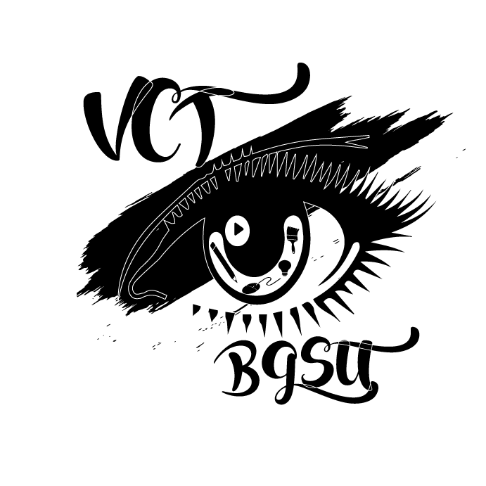
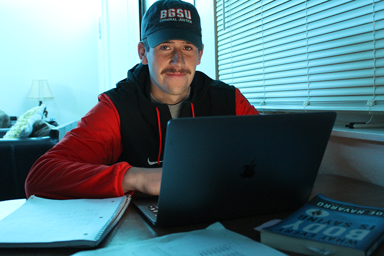

Dye Sublimation Color Study
A print experiment exploring color blending, heat transfer, and material interaction. This project demonstrates technical understanding of dye sublimation printing and color behavior.
Browse through my creative work — from print projects to photography assignments.
This section showcases my print design and production work, including marketing materials, branding layouts, and client-ready documents. Each project demonstrates my ability to combine visual design with real-world communication goals for businesses and organizations.
A print experiment exploring color blending, heat transfer, and material interaction. This project demonstrates technical understanding of dye sublimation printing and color behavior.

A branding-focused screen print project demonstrating layout planning, ink layering, and production workflow used in commercial print environments.

A bold promotional flyer designed to advertise an energy drink using strong typography, color contrast, and visual hierarchy for high-impact marketing.
A promotional flyer created to advertise a business open house event. This project focuses on clear information hierarchy, branding consistency, and marketing communication for small businesses.
An annotated client document created to review and improve customer communication materials. Demonstrates attention to detail, layout clarity, and professional document markup.
This section highlights my photography work, focusing on composition, lighting, and storytelling. These projects explore motion, portraiture, and environmental studies to capture emotion, identity, and real-world moments.
A motion photography study capturing fast-moving subjects using high shutter speeds. Explores timing, focus precision, and freezing dynamic action.
A conceptual self-portrait exploring identity through lighting, reflection, and composition. Focused on visual storytelling and personal narrative.

An environmental portrait showing the relationship between subject and career path using location, lighting, and composition.

A minimal composition focusing on line, contrast, and lighting structure. Demonstrates visual balance and geometric framing.

A close-up composition exploring texture, color relationships, and pattern structure within architectural materials.